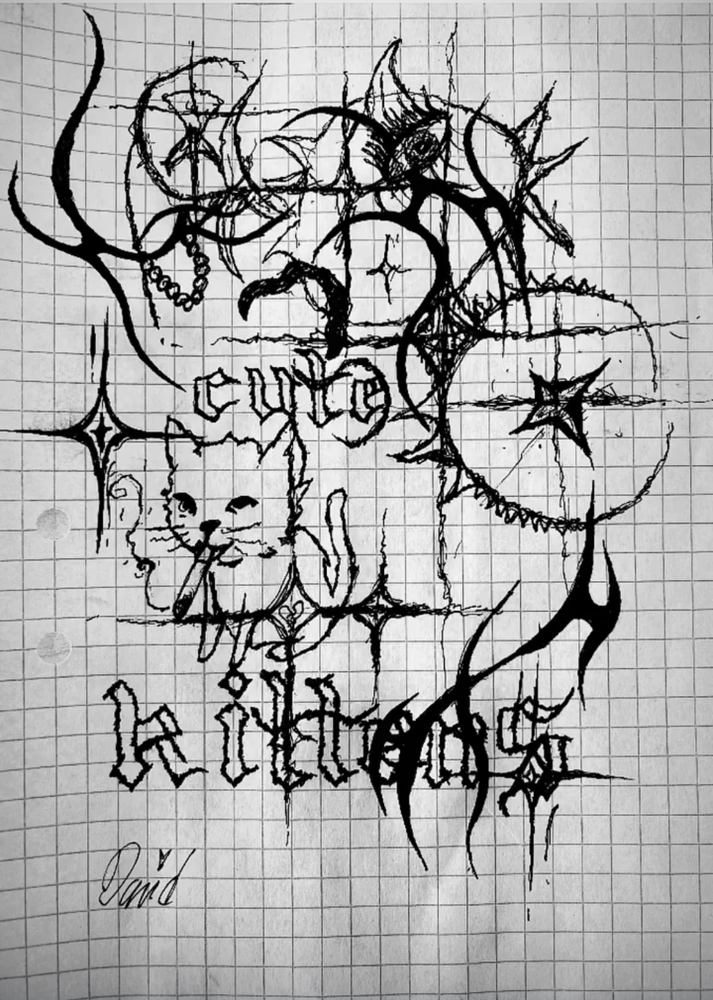
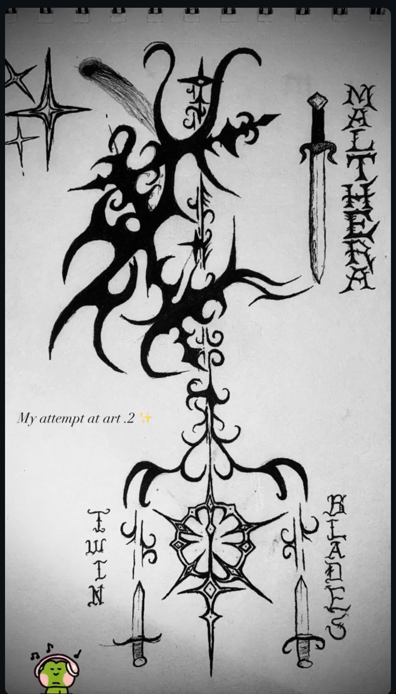
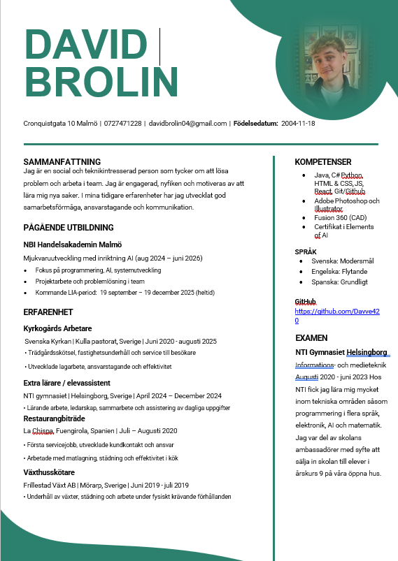

Funstuff 😊
This is a little section about my random interests, achievements and artworks.

Cybersigilism
Scary hound
Achievements & CV
Certificate in AI theory

This is a little section about my random interests, achievements and artworks.


